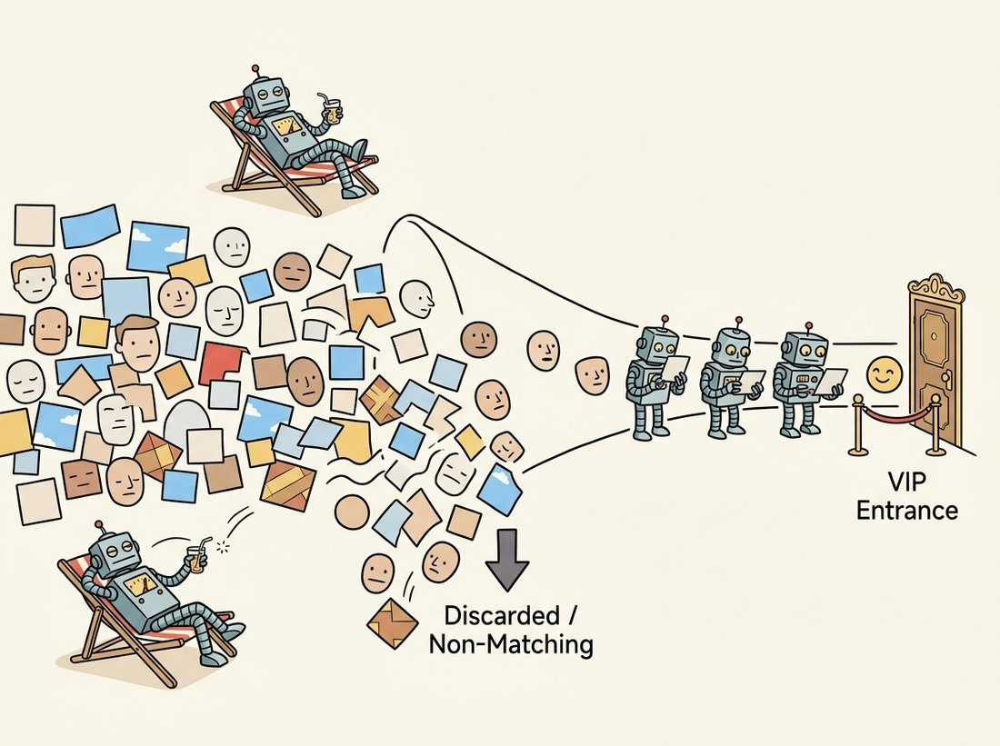

"I reject ninety-nine percent of the world in the first two questions, then take my time with whatever is left. It is not that I am fast; it is that I am magnificently lazy about the right things."
An Attentional Cascade With Excellent Priorities
Viola and Jones made face detection run in real time on 2001 hardware by attacking speed from three directions at once, and each of the three ideas is worth knowing on its own. The integral image makes any rectangular brightness sum a constant-time lookup, so a feature costs the same whether the window is tiny or huge. AdaBoost both builds a strong classifier from thousands of weak ones and, crucially, selects the few hundred features that matter out of a pool of nearly two hundred thousand. The attentional cascade arranges those classifiers so that the easy background windows, the vast majority, are rejected after one or two cheap tests, and only face-like windows pay the full price. Where Section 16.3 optimized accuracy, this section optimizes throughput, and the contrast between the two philosophies is the lesson.
The HOG detector of the previous section was accurate but slow: every window paid for a full $3780$-dimensional descriptor and dense pyramid search. Viola and Jones asked a different question, not "how accurate can detection be?" but "how can detection run thirty times a second on a 2001 laptop?", and their answer reshaped what real-time vision could do. This section dissects their three inventions in turn. It builds directly on the brightness-summation and gradient ideas of Chapter 3 and on the thresholding logic of Chapter 2.
1. Haar-Like Features and the Integral Image Intermediate
A Haar-like feature is a difference of summed pixel intensities over adjacent rectangular regions. A two-rectangle feature places a white box next to a black box and reports (sum under white) minus (sum under black); a face has many such patterns, the eye region is darker than the cheeks below it, the bridge of the nose is brighter than the eyes flanking it, and these brightness contrasts are robust to identity in a way raw pixels are not. The features are crude individually but there are an enormous number of them: at every position, every size, and several rectangle layouts, a $24 \times 24$ window admits roughly $180{,}000$ distinct Haar features.
Evaluating one feature naively means summing all pixels in each rectangle, which is slow and gets slower as the window grows. The integral image (also called the summed-area table) removes the size dependence entirely. Define $II(x, y)$ as the sum of all pixels above and to the left of $(x, y)$ inclusive. Then the sum over any axis-aligned rectangle with corners $A$ (top-left), $B$ (top-right), $C$ (bottom-left), $D$ (bottom-right) is
$$ \text{sum} \;=\; II(D) - II(B) - II(C) + II(A), $$
four array lookups and three additions, independent of the rectangle's area. Build the integral image once per image in a single pass, and afterward every Haar feature, at any scale, costs the same constant handful of operations. This is the trick that decouples feature cost from window size, and it is why Viola-Jones can scan an image pyramid without the cost exploding. Figure 16.4.1 shows the four-corner lookup and three representative Haar feature layouts.
Put a number on the constant-time claim and the magic becomes obvious. Summing a $200 \times 200$ rectangle the naive way touches $40{,}000$ pixels; summing a $2 \times 2$ rectangle touches $4$. With the integral image, both cost three additions and four lookups, a flat seven operations regardless of size, so the big sum just got ten thousand times cheaper while the small one barely changed. That single fact is what lets Viola-Jones evaluate roughly $180{,}000$ Haar features over an entire image pyramid in real time: enlarging a feature, the thing that should make it slower, now costs nothing at all. The price was paid once, in the single pass that built $II$.
The code below builds an integral image and reads off two rectangle sums in constant time, the operation every Haar feature reduces to.
# Build the integral image once, then read off rectangle sums in constant
# time with the four-corner rule. Subtracting two such sums implements a
# two-rectangle Haar feature whose cost is independent of rectangle size.
import cv2
import numpy as np
gray = cv2.imread("face_window.png", cv2.IMREAD_GRAYSCALE).astype(np.float64)
# OpenCV returns an integral image padded by one row/col of zeros at the top-left.
II = cv2.integral(gray) # II.shape == (H+1, W+1)
def rect_sum(II, x, y, w, h):
"""Sum of pixels in the w x h rectangle at (x, y), in O(1)."""
A = II[y, x]; B = II[y, x + w]; C = II[y + h, x]; D = II[y + h, x + w]
return D - B - C + A
# A two-rectangle "eyes darker than cheeks" Haar feature.
eyes = rect_sum(II, 4, 6, 16, 4) # darker band across the eyes
cheek = rect_sum(II, 4, 12, 16, 4) # brighter band across the cheeks
feature = cheek - eyes # positive when eyes are darker, as on a face
print(f"Haar feature (cheek - eyes) = {feature:.0f}")
# Haar feature (cheek - eyes) = 9821rect_sum uses the four-corner rule of Figure 16.4.1, and a single subtraction of two such sums implements a two-rectangle Haar feature, here one that fires on the eyes-darker-than-cheeks pattern.2. AdaBoost: Building and Selecting Advanced
Each Haar feature, on its own, is a terrible classifier: thresholding one feature value separates faces from non-faces only slightly better than a coin flip. Such a feeble rule is called a weak learner. AdaBoost (adaptive boosting) combines many weak learners into one strong classifier by training them in sequence, each new one focused on the examples its predecessors got wrong. The final decision is a weighted vote:
$$ H(x) \;=\; \text{sign}\!\left( \sum_{t=1}^{T} \alpha_t\, h_t(x) \right), \qquad \alpha_t = \tfrac{1}{2}\ln\frac{1 - \epsilon_t}{\epsilon_t}, $$
where each $h_t$ is a weak learner (here, one thresholded Haar feature), $\epsilon_t$ is its weighted error, and the weight $\alpha_t$ grows as the learner's error shrinks. After each round, the training examples that were misclassified get their weights increased, so the next round's weak learner is pulled toward the hard cases, exactly the same focus-on-mistakes principle as the hard negative mining of Section 16.3, here built into the training loop itself.
Viola and Jones's key realization was that AdaBoost is simultaneously a feature selector. At each round, the weak learner chosen is the single best Haar feature out of the whole pool of roughly $180{,}000$, so running AdaBoost for $T$ rounds automatically picks the $T$ most discriminative features and discards the rest. The first two features it selects are famous: an eyes-darker-than-upper-cheeks edge feature and a bridge-of-nose-brighter-than-eyes line feature. From a sea of candidates, boosting surfaces exactly the ones a human would point to.
AdaBoost is doing classifier construction and feature selection at the same time, and that double duty is what made Viola-Jones practical. A linear SVM (Section 16.3) needs you to hand it a fixed feature vector; you choose the features, it finds the boundary. Boosting chooses the features and the boundary together, greedily, one feature at a time, by what most reduces the weighted error right now. This is why the detector evaluates a few hundred features instead of the full $180{,}000$: the rest never earned a vote. Modern gradient-boosted trees (XGBoost, LightGBM) run the same construct-and-select loop on tabular data, and the "pick the most useful feature next" instinct reappears as feature attribution in deep networks.
3. The Attentional Cascade Advanced
Even a few hundred features per window is too slow when scanned over a full image pyramid, and Viola and Jones noticed an asymmetry to exploit: in any image, the overwhelming majority of windows are obviously not faces, blank wall, sky, floor. Spending the full classifier on each of them is wasteful. The attentional cascade arranges classifiers in stages of increasing complexity. The first stage is a tiny boosted classifier (the original used just two features) tuned to reject a large fraction of non-faces while passing essentially all faces. A window that fails any stage is rejected immediately; only a window that survives every stage is declared a face. Because the early stages are cheap and reject most windows, the average window costs almost nothing, while the rare face-like window pays for the deep later stages. The illustration below casts the stages as lazy bouncers who wave away almost the whole crowd at a glance. Figure 16.4.2 shows the funnel.

The cascade's whole philosophy fits in four words: spend effort where it is hard. Cheap windows get a cheap verdict; only the genuinely face-like ones earn the expensive scrutiny, which is the same instinct that the early-exit networks of Chapter 28 later rediscovered. The design contract per stage is asymmetric on purpose: each stage is tuned for a very high detection rate (say $99.9$ percent, so almost no faces are lost) and a modest false-positive rate (say $50$ percent). Chaining many such stages multiplies the false-positive rates toward zero while the detection rate, a product of near-ones, stays high. Ten stages at $50$ percent false positive each give an overall false-positive rate of roughly $0.1$ percent (that is $0.5^{10} \approx 0.001$, since a window must slip past every stage), while ten stages at $99.9$ percent detection each retain about $99$ percent of faces (that is $0.999^{10} \approx 0.99$). The cascade is how the detector achieves both speed and accuracy without compromising either, and the code below runs OpenCV's pretrained cascade, the direct descendant of the 2001 model.
# Run the pretrained Viola-Jones cascade on a photo: detectMultiScale walks
# the image pyramid and applies the staged cascade at every window, with
# minNeighbors grouping overlapping hits the way NMS does.
import cv2
# OpenCV ships the trained Viola-Jones cascade as an XML file of stages.
cascade = cv2.CascadeClassifier(
cv2.data.haarcascades + "haarcascade_frontalface_default.xml")
gray = cv2.cvtColor(cv2.imread("group_photo.jpg"), cv2.COLOR_BGR2GRAY)
faces = cascade.detectMultiScale(
gray,
scaleFactor=1.1, # image-pyramid step between scales
minNeighbors=5, # how many overlapping detections to confirm a face
minSize=(30, 30)) # ignore windows smaller than this
print(f"detected {len(faces)} faces")
for (x, y, w, h) in faces:
print(f" face at ({x}, {y}) size {w}x{h}")
# detected 4 faces
# face at (118, 86) size 92x92
# face at (305, 71) size 88x88
# ...detectMultiScale walks the image pyramid and applies the staged cascade at every window, returning confirmed face rectangles; minNeighbors is a built-in grouping that plays the role of non-maximum suppression.4. The Long Afterlife Beginner
Viola-Jones is over two decades old and still ships. Its tiny memory footprint and integer arithmetic make it ideal for hardware where a neural network will not fit: it ran the green focus boxes in early digital cameras, it powers the wake-on-face logic in some always-on sensors, and it remains a sensible default for controlled frontal-face tasks on microcontrollers. It has real limitations, frontal faces only, brittle under rotation and occlusion, and the modern replacement for accuracy is a small CNN such as OpenCV's own FaceDetectorYN or a MediaPipe model. But on a power budget of milliwatts, the cascade's reject-early discipline is still hard to beat, which is why the embedded-vision discussion of Chapter 28 returns to exactly this trade-off.
The original detector's final cascade had $38$ stages and $6{,}061$ features, selected by AdaBoost from a pool of about $180{,}000$. Training it in 2001 took weeks of CPU time, because each boosting round re-evaluated every candidate feature on every training example under the current weights. The detector then ran at about $15$ frames per second on a $700$ MHz Pentium III, which felt like magic in an era when face detection was a research demo measured in seconds per frame, not frames per second. The asymmetry, weeks to train, milliseconds to run, is the same bargain every learned vision system makes today, just at a different scale.
Who & situation: a smart-doorbell startup needed a battery-powered camera to wake its main processor only when a person approached, so the always-on detector had to run on a tiny microcontroller drawing microamps, with no room for a neural network. Problem: their first prototype used a lightweight CNN face detector that drained the battery in two days because the processor never truly slept. Decision: they moved the wake trigger to a Viola-Jones cascade running on the microcontroller's integer unit, tuned with a very aggressive first stage so that empty-porch frames were rejected in two feature evaluations, and only woke the main system on a confirmed face-like window. Result: battery life jumped from two days to over four months, because nearly every frame exited the cascade after the cheap first stage and the main processor stayed asleep. Lesson: the cascade's reject-early structure is not just a speed trick, it is a power trick; when the common case is "nothing here," a detector that decides "nothing here" in two operations beats a far more accurate one that always pays full price.
The cascade's deepest idea, spend computation in proportion to difficulty, came back as a central theme of efficient deep learning. Early-exit networks attach classifier heads to intermediate layers so easy inputs leave after a few layers and only hard inputs traverse the full depth, the cascade's reject-early logic made continuous and learnable. Cascade R-CNN stages detection heads at increasing IoU thresholds, an explicit homage. On the deployment side, the 2024-2026 push toward on-device vision (token pruning in vision transformers, dynamic-depth networks, the efficient operators of Chapter 28) is the same conservation principle Viola and Jones applied to Haar features, now applied to attention and convolution. For face detection specifically, lightweight learned models (BlazeFace, YuNet, the model behind FaceDetectorYN) have replaced the cascade for accuracy, but they inherit its obsession with running in real time on the smallest possible budget.
Implementing Haar features, AdaBoost training, and a cascade from scratch is hundreds of lines and weeks of training. OpenCV bundles the fully trained Viola-Jones model as a single XML file and exposes it through CascadeClassifier.detectMultiScale: integral-image construction, the staged evaluation, the pyramid, and detection grouping all happen inside one call. The same class loads cascades for eyes, full bodies, and license plates, and the modern cv2.FaceDetectorYN swaps in a small CNN behind a near-identical interface when accuracy matters more than the power budget.
# Two faces of face detection through one OpenCV interface: the integer-only
# Viola-Jones cascade for tiny power budgets, and FaceDetectorYN, a small CNN
# drop-in for when accuracy matters more than memory and milliwatts.
import cv2
# Classical cascade: tiny, fast, integer-only, frontal faces.
faces = cv2.CascadeClassifier(
cv2.data.haarcascades + "haarcascade_frontalface_default.xml"
).detectMultiScale(gray, 1.1, 5)
# Modern drop-in: a small CNN with the same "detect faces" job, higher accuracy.
detector = cv2.FaceDetectorYN.create("face_detection_yunet.onnx", "", (320, 320))CascadeClassifier runs the integer-only Viola-Jones model from one XML file, while FaceDetectorYN offers a CNN replacement when accuracy outweighs the power and memory budget.Suppose a cascade has $20$ stages, each rejecting $50$ percent of the windows that reach it and using on average $20$ feature evaluations. For a stream of windows that are all non-faces, compute the expected number of feature evaluations per window and compare it to a monolithic classifier that always evaluates all $400$ features. Then explain in one sentence why the speedup depends on most windows being non-faces, and what happens to the average cost in an image that is mostly faces.
Implement the integral image with a single double cumulative sum (cumulative sum down rows, then across columns) and verify it against cv2.integral on a random image. Then write the four-corner rect_sum and time it against a naive image[y:y+h, x:x+w].sum() for rectangles ranging from $4 \times 4$ to $200 \times 200$. Plot the two timings against rectangle area and confirm empirically that the integral-image version is flat while the naive version grows linearly with area.
Run the OpenCV frontal-face cascade on a set of group photos while sweeping scaleFactor over $\{1.05, 1.1, 1.3\}$ and minNeighbors over $\{2, 5, 10\}$. For each setting record the number of detected faces, the number of obvious false positives, and the wall-clock time. Build a small table and identify which parameter trades speed for recall and which trades false positives for missed faces. Relate minNeighbors explicitly to the non-maximum suppression of Section 16.3.